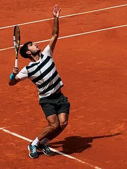
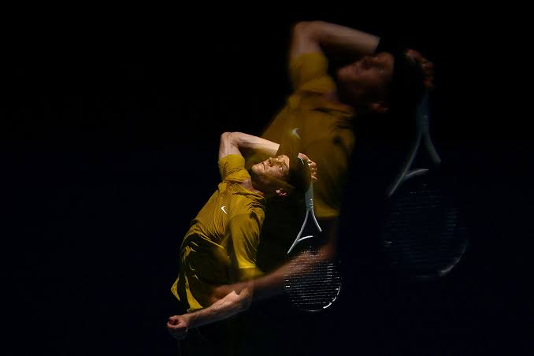

.jpeg)
No tênis profissional, os pontos do ranking servem para medir o desempenho dos jogadores ao longo de um período (normalmente os últimos 52 semanas). Quanto mais importante o torneio e melhor o resultado alcançado, mais pontos o jogador ganha.

Os pontos variam dependendo de quão longe ele avançou em cada torneio. Por exemplo, se ele ganhou Wimbledon, ele receberia 2000 pontos; se chegou à semifinal do US Open, 720 pontos, e assim por diante.
Então, Alcaraz teria algo em torno de 5200 pontos no ranking ATP. Lembrando que isso é uma estimativa, porque o ranking oficial considera os 19 melhores resultados do jogador nos últimos 52 semanas e eventuais torneios que caíram do ranking anterior.
Estreia precoce: Marcou seu primeiro ponto na ATP aos 14 anos e estreou no circuito profissional em 2020, no Rio Open.
Topo do mundo: Venceu o US Open de 2022 e atingiu o posto de número 1 mais jovem da história aos 19 anos.
Rei da grama: Faturou o torneio de Wimbledon em 2023 e 2024, superando Novak Djokovic em finais épicas.
Estreia olímpica: Conquistou a medalha de prata nos Jogos Olímpicos de Paris 2024.
Domínio e rivalidade: Venceu Roland Garros e o US Open em 2025, superando seu principal rival Jannik Sinner.
História escrita: Faturou o inédito Australian Open em fevereiro de 2026 contra Djokovic.
Career Grand Slam: Tornou-se o homem mais jovem de todos os tempos a vencer os quatro Majors, com apenas 22 anos.

Estreou no circuito profissional em 2018 e logo em 2019 venceu o Next Gen ATP Finals, torneio que reúne as maiores promessas do esporte.
A partir de 2024, consolidou-se como um gigante do esporte, acumulando troféus de Grand Slam e liderando a Itália rumo ao título da Copa Davis
Embora tenha enfrentado controvérsias com testes para substâncias proibidas em 2024, a Agência Internacional de Integridade do Tênis confirmou sua inocência e falta de culpa intencional, permitindo que ele mantivesse seu foco e nível de excelência.
Conhecido pela postura calma e ética de trabalho, seu jogo baseia-se em devoluções agressivas e golpes rápidos, o que o tornou o tenista a ser batido.
Dono de mais de 25 títulos, ele continua reescrevendo recordes, como se tornar o jogador mais jovem a alcançar o Career Golden Masters 1000.